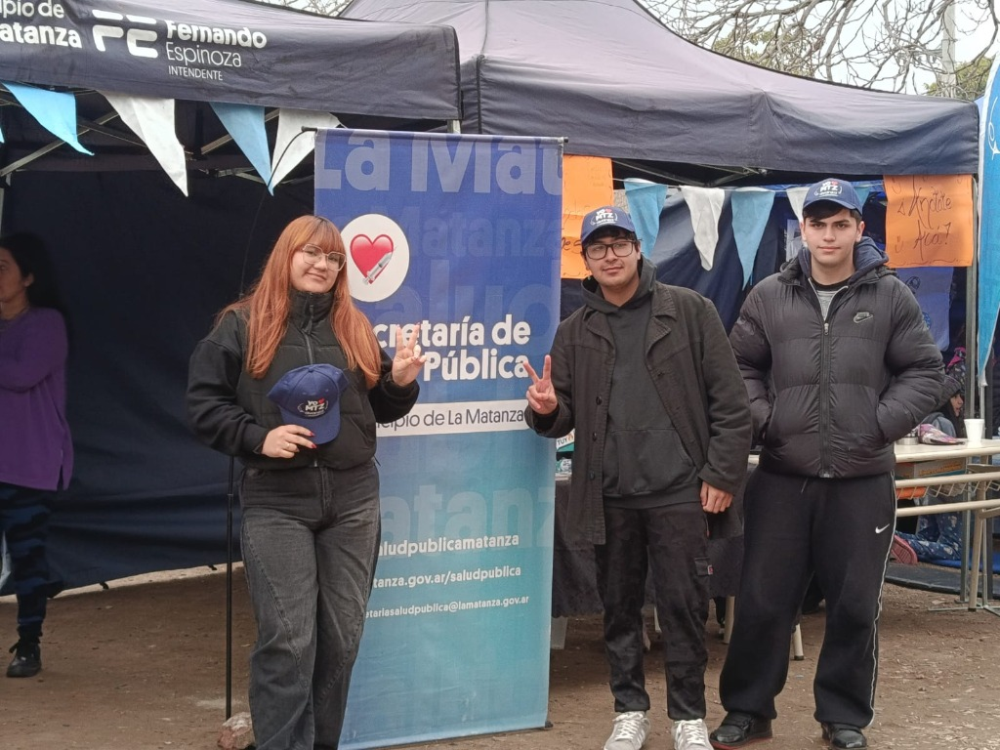
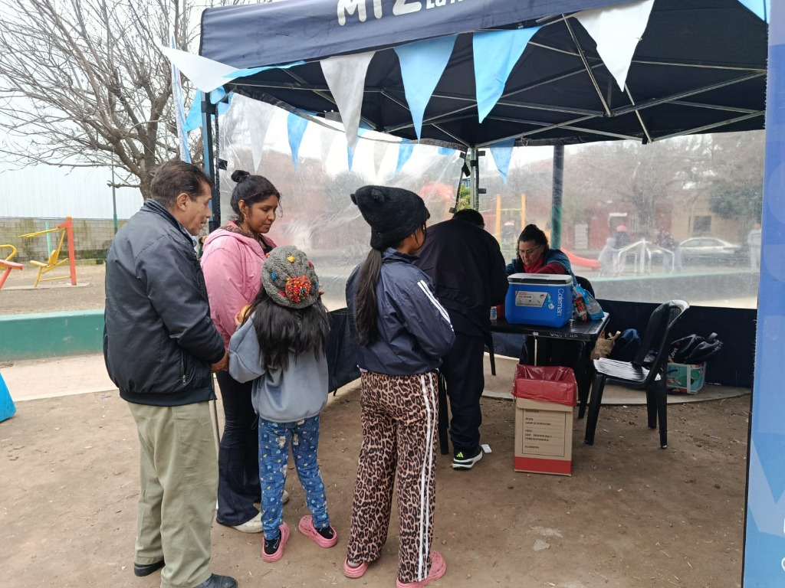
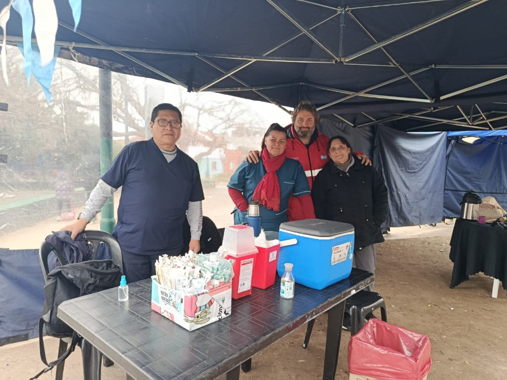
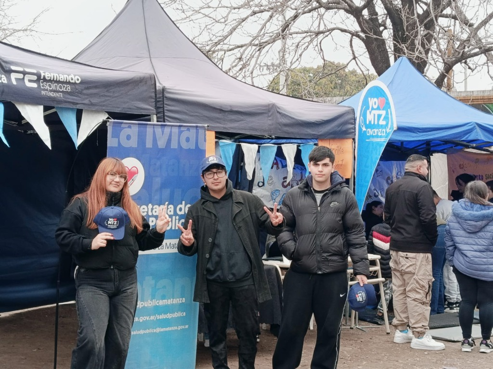
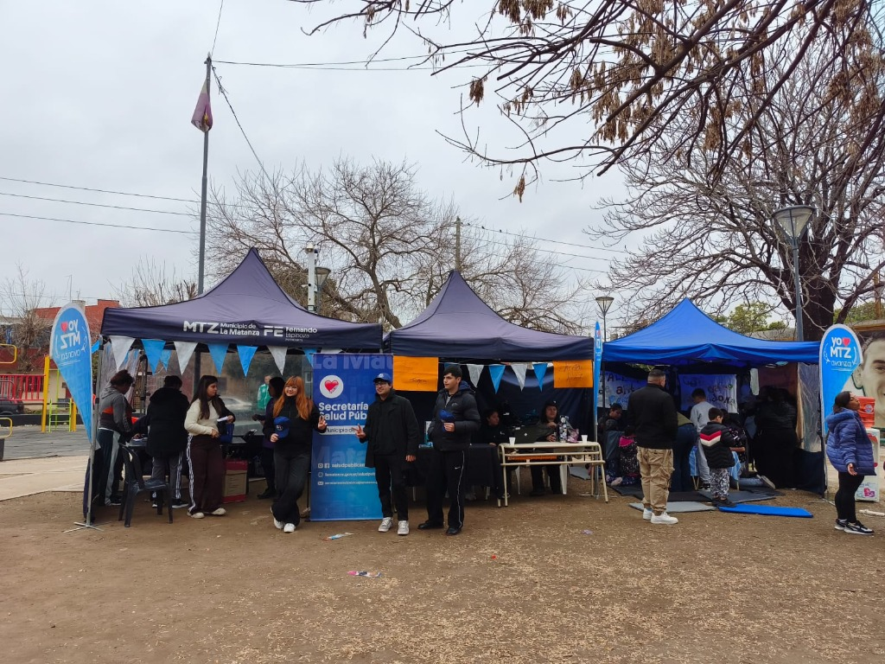

ARC VILLA INSUPERABLE
Mesa PolíticaConectando e impulsando ideas para nuestra comunidad en Villa Insuperable. Seguinos en nuestras redes oficiales y sumate al cambio.
ARC Villa Insuperable
Somos un espacio político del barrio. Nos organizamos para mejorar la vida de nuestra gente. Creemos en el pueblo, en la memoria y en la política como forma de cambiar la realidad. Queremos que cada vecino y vecina sea parte de lo que pasa en Villa Insuperable.
Eventos Destacados
En ARC Villa Insuperable, creemos en la acción y la participación. Organizamos regularmente actividades que fortalecen el tejido social y promueven el cambio positivo en nuestra comunidad. Aquí te presentamos algunos de nuestros eventos más recientes y significativos:
Jornada de Limpieza diaria
Para embellecer nuestros espacios verdes, fomentando la responsabilidad colectiva y el cuidado del medio ambiente.
Foros de Debate Abierto
Espacios de diálogo donde analizamos las necesidades del barrio y construimos propuestas conjuntas para un futuro mejor.
Talleres de Liderazgo
Capacitamos a jóvenes talentos para que se conviertan en los futuros líderes que Villa Insuperable necesita.
Desde ARC Villa Insuperable reafirmamos que las Islas Malvinas, Georgias del Sur y Sandwich del Sur son argentinas. Las vamos a defender con convicción, organización y respeto por el pueblo.
La lucha por recuperar nuestras islas no es solo un tema de país. También habla de memoria, de dignidad y de amor por la patria.
Desde el barrio hasta el mundo, nos sumamos a millones de argentinos que piden respeto por nuestra soberanía. La política también sirve para cambiar la realidad. Y ese cambio empieza por defender lo que es nuestro.
Nacional
Las Malvinas son parte de Argentina. Las defendemos con organización y con firmeza desde cada barrio y cada comunidad.
Memoria y Dignidad
Recordamos a quienes dieron su vida por la patria y cuidamos su legado con respeto al pueblo argentino.
Compromiso Colectivo
Desde Villa Insuperable, cada acción es un gesto de soberanía. Defender lo nuestro también es construir juntos.
Nuestros Pilares
Organización Popular
Trabajamos desde la base, con el pueblo como centro.
Fidelidad
Estamos con nuestra comunidad y con nuestra patria.
Transformación
La política sirve para cambiar las cosas.
Misión
La política es una herramienta de cambio
"Construyendo organización popular, fidelidad. La política es la herramienta de transformación del ser."
En ARC Villa Insuperable vemos la política como una forma de cambiar la realidad de nuestra comunidad. Cada acción, cada publicación y cada encuentro en redes busca unir a la gente, compartir nuestros valores y construir una organización fuerte, cercana y comprometida con el pueblo.
Organización popular
Trabajamos desde el barrio, con el pueblo como parte central. Cada vecino y vecina suma a este camino.
Fidelidad
Mantenemos un compromiso real con nuestra comunidad y con nuestros valores.
Transformación
La política sirve para cambiar lo que no funciona. Buscamos mejorar la vida desde adentro y hacia afuera.
Galería de Imágenes





Instagram
@arcvillainsuperable
Facebook
@UBFielesYRebeldes
TikTok
@arc.insuperable
Twitter / X
@Arcinsuperable1